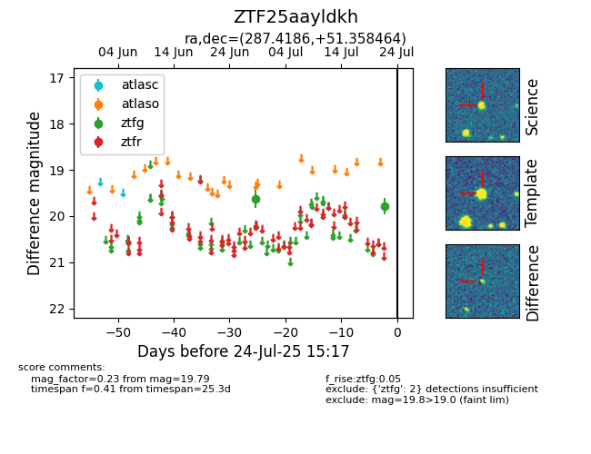

Target ZTF25aayldkh at 2025-07-24 15:17, see:
FINK: fink-portal.org/ZTF25aayldkh
Lasair: lasair-ztf.lsst.ac.uk/objects/ZTF25aayldkh
ALeRCE: alerce.online/object/ZTF25aayldkh
alt names
ZTF25aayldkh (ztf,fink)
coordinates:
equatorial (ra, dec) = (287.4186,+51.35846)
galactic (l, b) = (81.9994,+18.17853)
photometry
last ztfg=19.79
2 ztfg detections
